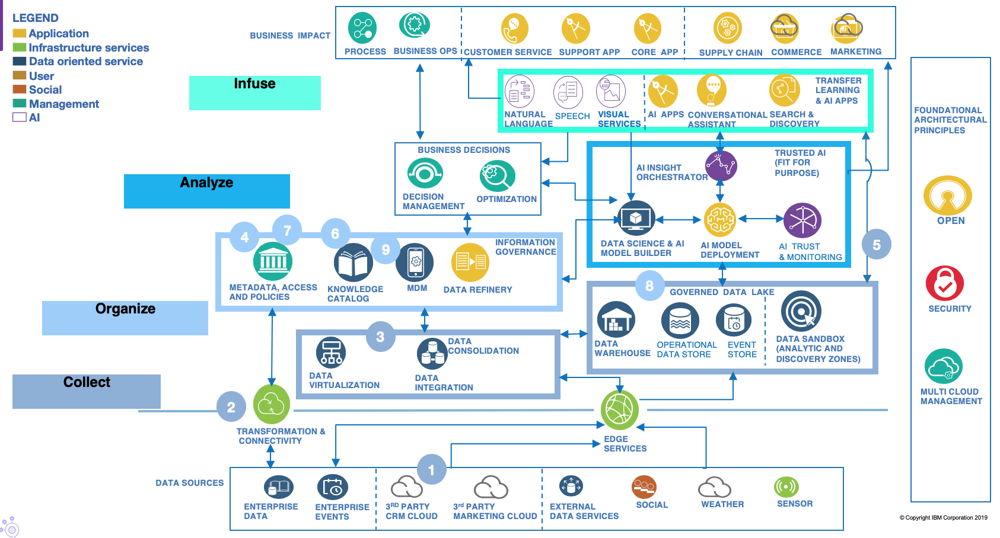

Building a Governed Data Lake
As part of the collect and analyze activities, is a focus to govern and manage the data for building the data lake. Using the reference architecture, the following capabilities are used to address this goal:

- Data sources are more than just databases, these include 3rd party and external data.
- Connectors provide specialized client code to access the function/data of an asset as well as any metadata it handles. Typically, the metadata identifies the type of asset, how to access it and possibly the schema of the data if the data is structured.
- Capturing metadata from processes that copy data from one location to another enables the assembly of lineage.
- The data catalog provides a search interface to make it easy to query details of the data landscape.
- Metadata discovery engines access the data through the connectors and add additional insight about the data content into the data catalog.
- Knowlege catalog: Glossaries define the meaning of the terminology used by the people working in the organization when they interact with each other, external stakeholders and digital systems. The Asset Owners link their assets to the relevant glossary terms, making it easier to find relevant data in the data catalog.
- The governance team add definitions for how the assets of the organization should be governed and link them to classifications.
- The Subject Area Owners attach the governance classifications to their glossary terms. This identifies the governance requirements that apply to assets linked to these terms.
- The Asset Owners still link their assets to the relevant glossary terms, making it easier to find relevant data in the data catalog. The governance classifications attached to the glossary terms then apply to the assets. They may add additional classifications to the assets if not covered by the classifications attached to the glossary terms. Classified glossary terms flow to the data catalog. Replication of governance definitions into the data catalog allows the catalog users to understand the governance requirements behind the classifications.
- Users of the search tool can drill down to understand the classification of assets and the governance requirements behind them.
- The IT Team encode the governance definitions into the technologies so that enforcement and auditing of governance requirements is automated.The encoding uses placeholders for metadata values that are accessed at runtime.
- Details of the governance requirements, classification and asset details are sent to an operational metadata store. This store serves up metadata that drives the governance functions embedded in operational systems. Updates to classifications attached to glossary terms made by the subject area owners flow through the data catalog to the operational metadata store.
- Large population of users accessing the data catalog. Need to consider security of metadata and scaling the deployment of the data catalog.
- Two way synchronization needed with business tools that work with data to ensure all users see consistent governed assets, and feedback is consolidated to be passed to asset owners.
- Asset owners need to be part of the collaboration and feedback cycle. Subject area owners receive direct feedback and questions from data catalog users about the glossary term definitions. They use the interaction to correct and improve the glossary terms as well as crowd-source new terms.